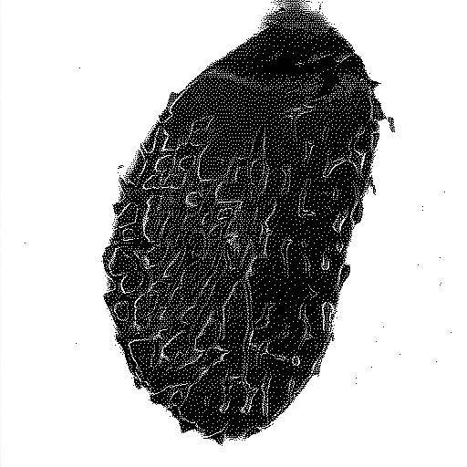

2022/01/27
I got a new computer - did a massive amount of distro hopping from antix to fedora silverblue. I've settled on Pop OS for now as it's simple and 'Just Works' while letting me customize it to feel like home. Beyond that, I've been doing good - just working on projects and continuing to further my knowledge of the rust language.
Xinrui's ankle is still slowly healing but I'm hoping we can go do something outside in February. As things are getting warmer and the sunsets are getting more intense, nature has started to call me. Till next time ~
